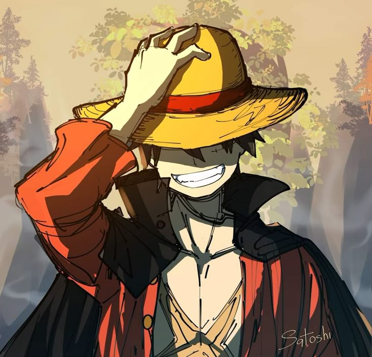
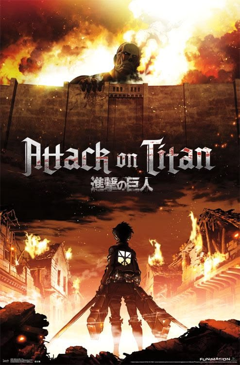
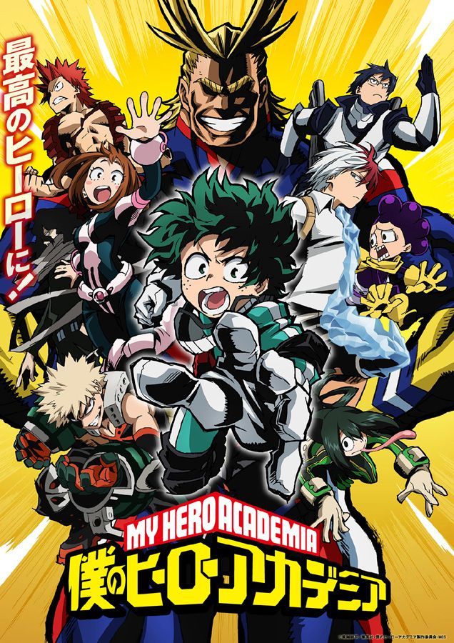
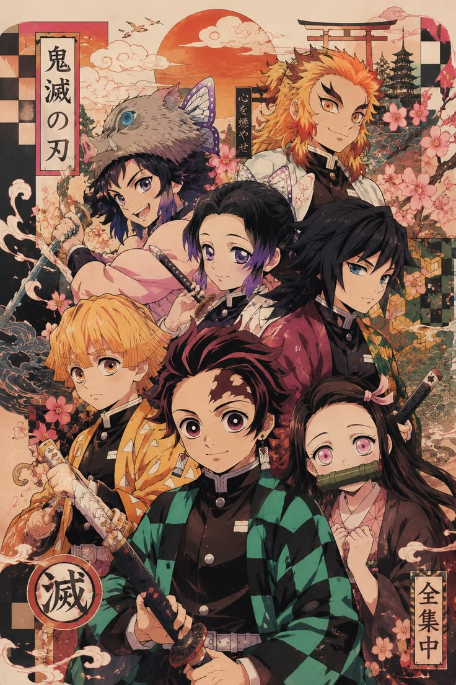

NatAnimo nedir?
Bir serinin hikâyesini bitirince karakterlerini ya da arka planını da merak ediyorsan, burada onlara dair yazılar bulabilirsin. İçerikleri kısa ve düzenli tutmaya çalışıyoruz; böylece ilgini çeken konuya kolayca geçebilirsin.
Neden NatAnimo?
Anime listeleri, bölüm anlatımları ve karakter biyografileri aynı yerde. Aradığın seriye göz at, sonra merak ettiğin ayrıntılara geç.
Anime Listesi
Serileri tek listede gör, ilgini çekeni arama ya da sıralama seçenekleriyle bul.
One Piece Anlatımı
Luffy ve tayfasının denizlerdeki yolculuğuna, dostluklarına ve hedeflerine göz at.
Sasuke Biyografisi
Sasuke'nin seçimlerini, Uchiha ailesiyle bağını ve değişen hedeflerini tanı.
Attack on Titan
Duvarların ardındaki yaşamı ve insanlığın özgürlük arayışını anlatan seriye göz at.
Karakter biyografisiItachi Uchiha
Itachi'nin kararlarını ve ardında bıraktığı izleri daha yakından tanı.
Öne çıkan anlatımAkame ga Kill
Night Raid'in mücadelesi ve karakterlerin zor seçimleri üzerine bir anlatım.

Naruto

One Piece

Attack on Titan

My Hero Academia

Demon Slayer